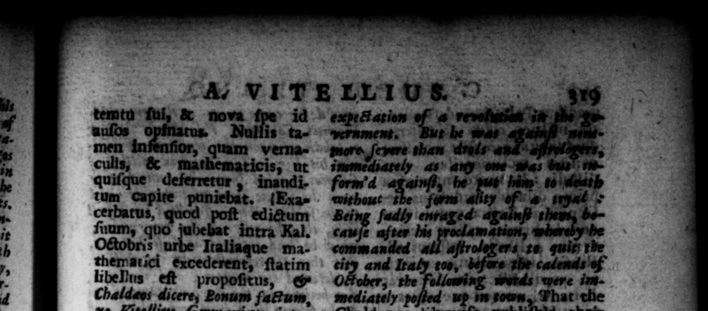

r r 3 akbpb CAE ICS EE LL auſos 0 ſuum uo jubebat intra Kal. Octo Italiaque mathematici &xcederent, ſtatim libeNns eſt propoſirus, & Chaldeos dicere, Bonum fattum, ne Vitellize Germanicus intra eundem Kalendarum diem uſquam cet. præberi cibum prohib vaticinante Catta muliere, cui velut oraculo acquieſcebat, ite demum firmit diutiſſime — rs — parent exſtitifſer.” Et a. ii ttadunt, iplam t#dio pra ſentium K 1 ö tu, venenum a filio im ſſe baud ſane dificulter, — o= ; 3%7 Ti 15. Octavo imperii menſe deſciverunt ab eo excercitus Mafiarum atque Pannonia: item ex tranſmarinis, Iudaicus & Syriacus : ac. pars in abſentis, pars in præſentis Veſpaſian i, ver ba jurarunt. Ad reti. nendum ergo ceterorum homjnum ſtudium ac favorem, nhil on publice privatimq; nul- F* lo adhihito modo, largitus eſt. Dele&um quoque ea conditione in urbe egit, ut vuluntariis non modo miſſionem poſt victotiam. ſed etiam, Veteranorum . juſtæ que militiæ commeda polliceretur. Urgent: deinde terra marique boſti, hinc fratrem cum claſſe, ac tironibus & gladiatorum manu oppoſuit: hinc & Bedriacenſes coPias, & duces. Atque ubiq; aut ſuperatus, aut proditus, ſalutem ſibi, & millies H. S. a Flavio Sabino Veſpaſiani fratre pepigit : ſtatimque pro 0 ; LEE | * 3 A, VITELLIUS ©. temtu ſui, & nova id | | tus. Nullis tamen inſenſior, quam vernaculis, & mathematics; nt ; 23 & in morte matris fuit, quaſi 1 ui er, a Germanwitch whom he would rei Tublicł . without lamation, that the fame VitelliGermanicus ſhould be no by the day oi the ſaid calends. He was ſuſpected" too | as it be hod forbid am ſuſen anti to be mother's death, ſhe was not well a le That be an oracle, having te m . 1 — be given her, w wit to Veſpaſian ds their emperor, being upon the {pot with them, and here he was not perſonally preſent, did the ſame for him. Wherefore Yitellius: 10 *ure the favar and affetion"of the people, * about him ail that be bad and privately, in the m extravagant manner. 'He""lifewiſe made 4 e in tn, and remiſed a t wonld come in as vo— not only their diſchatge of the viftory, but Ghewiſe all the advautages due to veteran: that had ſoryed up their time in the wars complewtly. 25. enemy naw” preſſing en de ty fü, and land, on one hand e 48G them his brother with a fleer the new leyys and a body of | gladiators; n in another quarter the troops and generals that were engaged at Bedrinruty, But being every beaten er beNT „„ 5 15 HR
